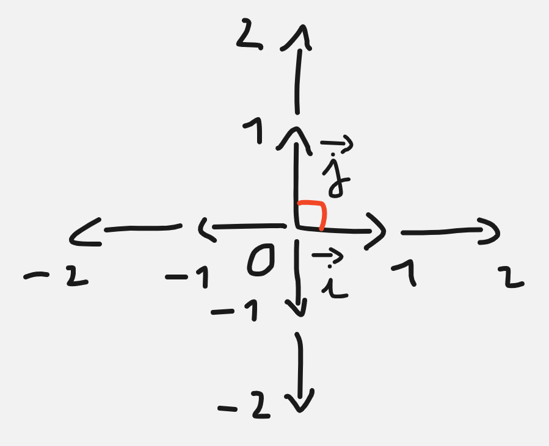

Nombre complexe cours 1 - Repère en deux dimensions
Dans ce chapitre nous verrons comment faire de la géométrie en deux dimension
par l'intermédiaire des nombre dit "complexe", ce sont des nombres qui sont ici
représentés géométriquement en deux dimension. Mais d'abord comment fonctionne
la représentation d'un point en deux dimensions ?
Plan en deux dimensions :
un plan en deux dimesion est construit à partir deux deux vecteurs dit "unitaires"
qui représente une unité dans la dimension où l'on représente un point, et d'un
point particulier appelé origine du plan. Les deux vecteurs unitaires sont appelés
\(\vec{i}\) et \(\vec{j}\), l'origine est le point \(O(0;0)\), on note alors
le \(O;\vec{i};\vec{j}\) plan en deux dimensions. On appelle aussi ce plan en deux
dimension repère en deux dimensions, car on peut se repérer dans cette espace.
Voici des exemple de repères :
Repère orthonormé :
Un repère orthonormé est un repère qui ressemble au troisième repère (voir ci-dessus).
On peut placer plusieurs représentants des vecteurs unitaires de manière adjacente
sur leur vecteur respectif pour pouvoir représenter les nombre positif, et de la même
manière pour les nombres négatif avec les représentants des vecteurs opposés :

Un repère est orthonormé si on a les vecteurs unitaires qui font la même taille et qu'ils sont normal entre eux,
en terme mathématique : \(\lVert\vec{i}\rVert = \lVert\vec{j}\rVert\) et \(\vec{i}.\vec{j} = 0\)
On représente ainsi un repère orthonormé dans un logiel de géométrie :
Exercice : Retrouver les coordonnées du point \(\) et exprimer les avec une somme de vecteurs.
Exemple : Le point \(A(2{;}{-}6)\) s'exprime avec une somme de vecteurs ainsi : \(2\vec{i} - 6 \vec{j}\)